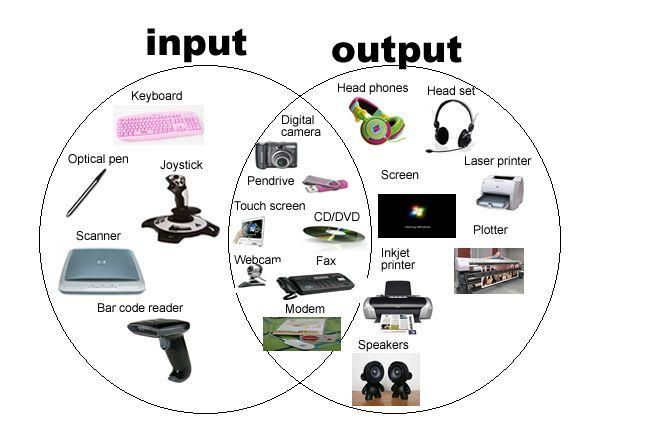

Ils sont puissants, robustes, tres faciles a maintenir, optimiser et reparer .
Ils sont composes par:
- Unite centrale
- Les peripheriques
- PE
- PS
- PE/S


Ils sont puissants, robustes, tres faciles a maintenir, optimiser et reparer .
Ils sont composes par: